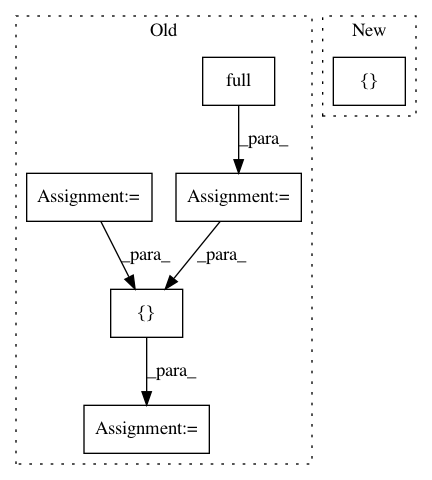

b85c2397356c543b13be4894bf06900a41a13450,tests/python/frontend/tensorflow/test_forward.py,,_test_lstm_cell,#Any#Any#Any#Any#Any#,2047
Before Change
tf.reset_default_graph()
input_size = num_hidden
input_data = np.full((batch_size, input_size), 1., dtype=dtype)
in_state_c = np.full(
(num_layers, batch_size, num_hidden), 0.1, dtype=dtype)
in_state_h = np.full(
(num_layers, batch_size, num_hidden), 0.1, dtype=dtype)
def _get_tensorflow_output():
with tf.Session() as sess:
with variable_scope.variable_scope(
"root", initializer=init_ops.constant_initializer(0.5)):
m0 = array_ops.zeros([batch_size, num_hidden])
m1 = array_ops.zeros([batch_size, num_hidden])
x = tf.placeholder(shape=(batch_size, input_size), dtype=dtype)
g, ((out_m0, out_m1)) = \
tensorflow.contrib.rnn.LSTMBlockCell(num_hidden,
forget_bias=forget_bias)(x, (m0, m1))
sess.run([variables.global_variables_initializer()])
res = sess.run([g, out_m0, out_m1], {
x.name: np.array([[1., 1.]]),
m0.name: 0.1 * np.ones([batch_size, num_hidden]),
m1.name: 0.1 * np.ones([batch_size, num_hidden]),
})
graph_def = sess.graph.as_graph_def(add_shapes=True)
final_graph_def = graph_util.convert_variables_to_constants(
sess,
graph_def,
["root/lstm_cell/LSTMBlockCell"])
return final_graph_def, res
graph_def, tf_out = _get_tensorflow_output()
tvm_output = run_tvm_graph(graph_def, [input_data, in_state_c, in_state_h],
["root/Placeholder", "root/lstm_cell/LSTMBlockCell_c",
"root/lstm_cell/LSTMBlockCell_h"], num_output=2)
assert isinstance(tvm_output, list)
out = tvm_output[0]
out_state = tvm_output[1]
out_state_tup = np.split(out_state, indices_or_sections=2, axis=1)
out_state_c = np.reshape(out_state_tup[0], (batch_size, num_hidden))
out_state_h = np.reshape(out_state_tup[1], (batch_size, num_hidden))
tvm_out = [out, out_state_c, out_state_h]
tvm.testing.assert_allclose(tf_out[0], tvm_out[0], rtol=1e-3, atol=1e-3)
def test_forward_lstm():
After Change
graph_def, tf_out = _get_tensorflow_output()
tvm_output = run_tvm_graph(graph_def, [input_data, in_state_c, in_state_h],
["root/input", "root/m0", "root/m1"], num_output=7)
assert isinstance(tvm_output, list)
tvm.testing.assert_allclose(tf_out[0], tvm_output[6], rtol=1e-3, atol=1e-3)
In pattern: SUPERPATTERN
Frequency: 3
Non-data size: 6
Instances
Project Name: apache/incubator-tvm
Commit Name: b85c2397356c543b13be4894bf06900a41a13450
Time: 2020-07-16
Author: radioheads@163.com
File Name: tests/python/frontend/tensorflow/test_forward.py
Class Name:
Method Name: _test_lstm_cell
Project Name: Bihaqo/t3f
Commit Name: 321762d43d7d65b7399d5a25cbf2e2c25f28cf40
Time: 2017-03-20
Author: novikov@bayesgroup.ru
File Name: t3f/ops_test.py
Class Name: TTMatrixTest
Method Name: testTTMatTimesTTMat
Project Name: Bihaqo/t3f
Commit Name: 321762d43d7d65b7399d5a25cbf2e2c25f28cf40
Time: 2017-03-20
Author: novikov@bayesgroup.ru
File Name: t3f/ops_test.py
Class Name: TTMatrixTestBatch
Method Name: testTTMatTimesTTMatSameBatchSize